// Auth
Authentication & Access Control
AllureDeck supports two authentication methods out of the box: local username/password auth and OIDC Single Sign-On via Azure AD, Keycloak, Okta, or Google. Choose one or layer them to fit your organisation.
Access is governed by a 3-level RBAC model — admin, editor, and viewer — applied per-project. JIT user provisioning creates accounts automatically on first OIDC login, with role assignment driven by identity-provider claims.
- Local auth + OIDC SSO (Azure AD, Keycloak, Okta, Google)
- Authorization Code + PKCE flow — no client secrets in browser
- 3-level RBAC: admin, editor, viewer
- JIT user provisioning on first SSO login
- JWT-based sessions with auto-generated signing keys
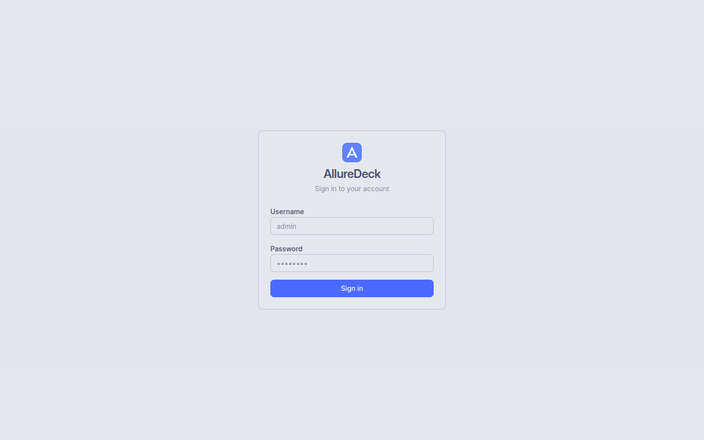
// Dashboard
Projects Dashboard
The dashboard gives you an at-a-glance health summary across all your projects. Health summary cards show Total, Healthy, Degraded, and Failing counts so you can triage issues instantly without drilling into each project.
Each project card shows a sparkline of recent build results, a colour-coded pass rate badge, and test counts. Tag management lets you group and filter projects by team, environment, or any custom label, with both grid and list views available.
- Health summary cards: Total, Healthy, Degraded, Failing
- Per-project sparklines and pass rate badges
- Tag management for filtering and grouping
- Grid and list view toggles
- Instant search across all projects

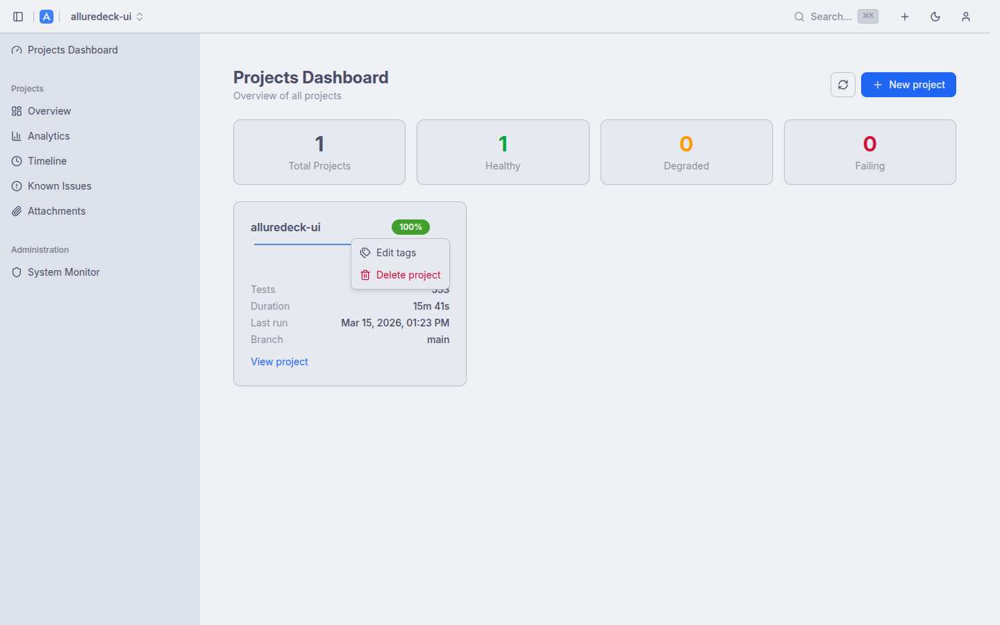
// History
Project Overview & Report History
The project overview surfaces key KPIs — Pass Rate, Total Tests, Duration, and Last Run — as stat cards at the top, giving you the metrics that matter before you scroll into the history.
The paginated report history table supports branch filtering and three grouping modes: None, Commit SHA, and Branch. Pass rates are colour-coded from red to green. Select any two builds to queue them for comparison.
- Stat cards: Pass Rate, Total Tests, Duration, Last Run
- Branch filtering and build grouping (None, Commit SHA, Branch)
- Colour-coded pass rate column
- Pagination with configurable page size
- Build selection for side-by-side comparison

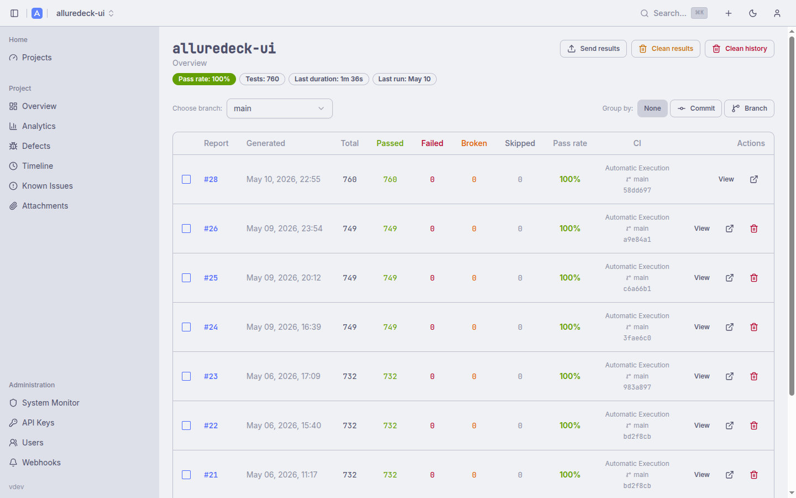
// Analytics
Analytics & Trends
Server-side computed analytics give you rich trend data without sacrificing UI responsiveness. Branch filtering scopes all charts to the slice of history you care about. Charts update in real time as you change the filter.
The analytics view combines four chart types — Status Trend, Pass Rate Trend, Duration Trend, and a Latest Status Distribution donut — with a Failure Categories breakdown and a Low Performing Tests table for the slowest and least reliable cases.
- Status Trend (stacked bar chart over time)
- Pass Rate Trend (line chart with configurable thresholds)
- Duration Trend and Latest Status Distribution (donut)
- Failure Categories breakdown
- Low Performing Tests: slowest and least reliable
- KPI sparklines derived from last 10 builds


// Timeline
Test Execution Timeline
The interactive D3.js Gantt chart visualises test runs laid out across parallel workers over time. Bars are colour-coded by status — passed, failed, broken, skipped — and a hover tooltip shows duration, suite, and status details.
A minimap with brush control lets you select a viewport into long runs. The chart is fully keyboard accessible: arrow keys pan, +/- zoom, Home resets the view, and Escape clears any selection. A sortable and searchable detail table sits below the chart.
- D3.js Gantt chart across parallel workers
- Minimap with brush-select viewport control
- Colour-coded by status with hover tooltips
- Keyboard navigation: arrows pan, +/- zoom, Home reset
- Sortable and searchable detail table

// Compare
Build Comparison
Select any two builds from the Report History table and click Compare to generate a structured diff. The summary instantly shows how many tests Regressed, were Fixed, Added, or Removed between the two builds.
Filter tabs let you focus on a specific change category. Each row shows the duration delta alongside the status change, making it easy to spot tests that pass but have become significantly slower.
- Select two builds from history, click Compare
- Summary counts: Regressed, Fixed, Added, Removed
- Filter tabs by change category
- Duration delta per test
- Linked directly from Report History

// Known Issues
Known Issues
Known Issues lets you tag test cases that are intentionally broken — flaky tests, tests blocked by open bugs, or tests expected to fail in certain environments. Pattern matching uses regex or substring rules, so a single entry can cover a whole suite.
The adjusted pass rate excludes matched tests, giving you a cleaner signal of production quality. Each known issue has an inline resolve/reopen toggle so your team can track remediation without leaving the dashboard.
- Pattern matching with regex or substring rules
- Adjusted pass rate excludes matched tests
- Per-project known issue management
- Inline resolve / reopen toggle
- Covers flaky tests, known bugs, and environment exclusions
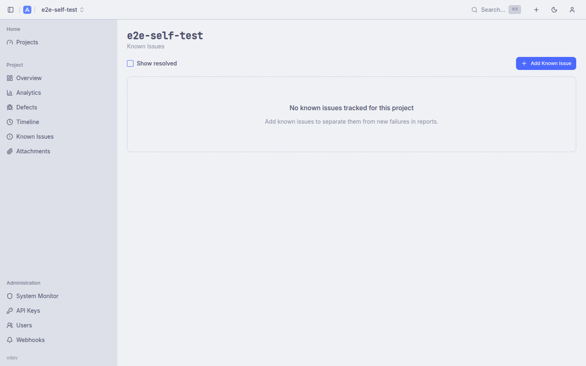
// Viewer
Report Viewer
AllureDeck embeds Allure 2 and Allure 3 reports directly inside the dashboard via a secure iframe, so there is no need to switch tabs or share raw links. Breadcrumb navigation keeps you oriented within the report hierarchy.
The embedded viewer exposes the full Allure feature set: test results tree, quality gates, retries, flaky indicators, attachments, and environment information. An open-in-new-tab button is always available for deeper inspection.
- Embedded Allure 2 and Allure 3 report support
- Secure iframe with breadcrumb navigation
- Open in new tab for full-screen access
- Full Allure features: results tree, quality gates, retries
- Flaky test indicators and attachment viewer

// CI/CD
Report Operations & CI/CD
The action bar exposes the full report lifecycle: upload results (drag-and-drop or tar.gz), generate reports, and clean results or history. All operations are also available over the REST API for seamless CI/CD integration.
API keys with an ald_ prefix enable passwordless access from pipelines. Each project can have multiple keys with scoped permissions. Curl examples and a GitHub Actions snippet are provided directly in the UI to minimise setup time.
Large tar.gz uploads are processed asynchronously by River background workers. The UI polls /jobs/{id} and shows phase and progress in real time — no browser timeouts on big result sets.
- Upload results via drag-and-drop or tar.gz
- Async tar.gz processing with real-time job progress
- Generate reports, clean results and history
- API keys with
ald_prefix for CI/CD access - Curl examples for upload and generate operations
- GitHub Actions integration example
- Scalar API reference at
/swagger
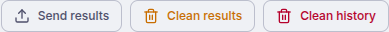
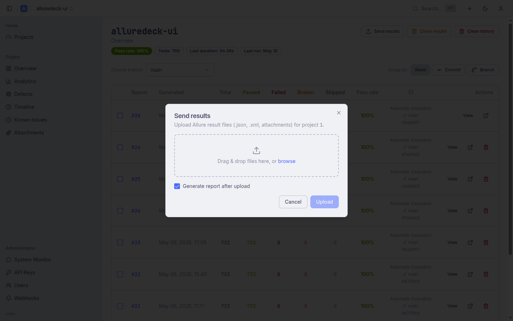
// Defects
Defects View
The Defects view groups recurring test failures by their fingerprint — a normalised hash of the failure message and stack trace. Instead of drowning in individual test rows, you see clusters of structurally identical failures across builds so you can triage root causes immediately.
Each defect group shows affected test count, first/last seen build, and a heuristic category (product bug, infrastructure, test issue). Click any group to drill into the individual failures and their full error context.
- Fingerprint-based grouping of recurring failures
- Heuristic categorisation: product bug, infrastructure, test issue
- First/last seen build and affected test count per group
- Drill-through to individual failure detail
- Computed per-build — no manual tagging required
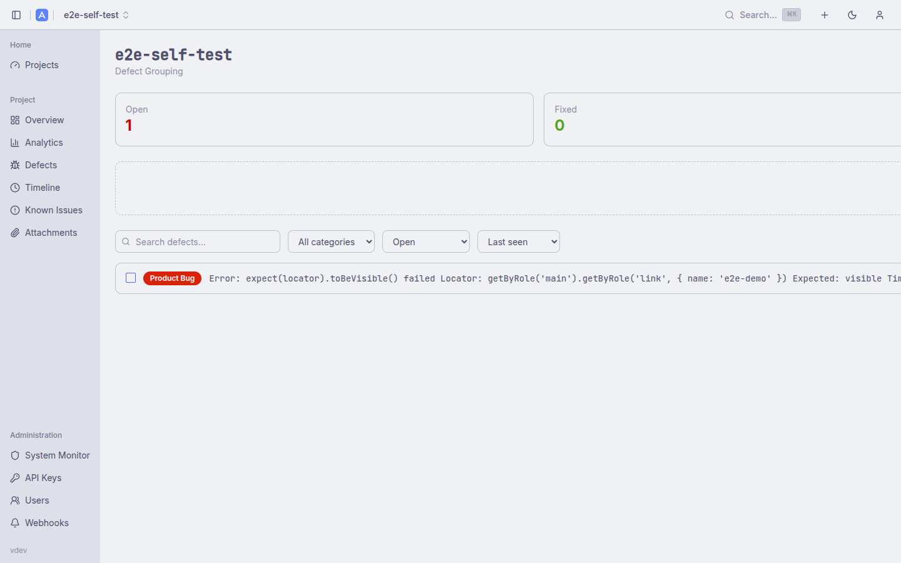
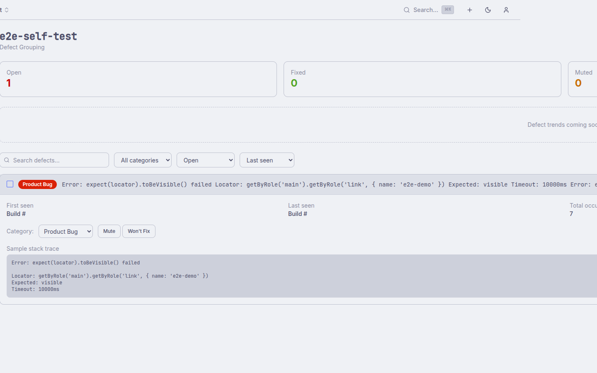
// Trace Viewer
Embedded Playwright Trace Viewer
When a test run includes Playwright trace attachments, AllureDeck embeds the official Playwright Trace Viewer directly in the dashboard. No need to download zip files or run a local server — click the attachment and the trace opens inline.
The trace viewer exposes the full Playwright toolset: step-by-step timeline, network requests, console logs, DOM snapshots, and before/after screenshots for each action. Combined with the Allure attachment browser, this makes post-mortem debugging significantly faster.
- Embedded Playwright Trace Viewer at
/trace/ - Step-by-step timeline, DOM snapshots, network log
- Before/after screenshots per action
- Works alongside Allure attachment viewer
- No local tooling or file download required

// Webhooks
Webhook Notifications
Get notified in Slack, Discord, Microsoft Teams, or any HTTP endpoint whenever a build completes. Webhooks are configured per-project and support templated payloads so you control exactly what information hits your channel.
The webhook editor includes a live payload preview so you can verify the message format before saving. Delivery history and retry status are visible in the admin panel's System Monitor.
- Native Slack, Discord, and Teams message formatting
- Generic HTTP endpoint support with custom payload
- Per-project webhook rules
- Live payload preview in the editor
- Delivery history in System Monitor
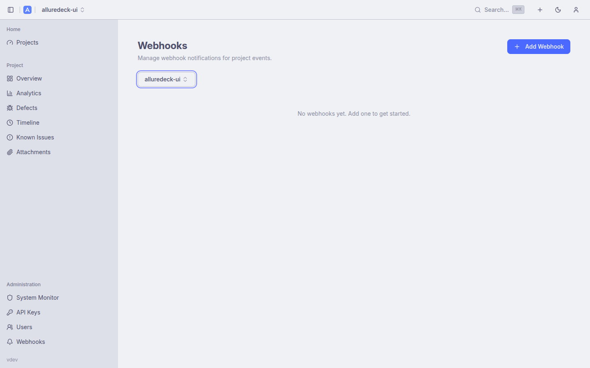
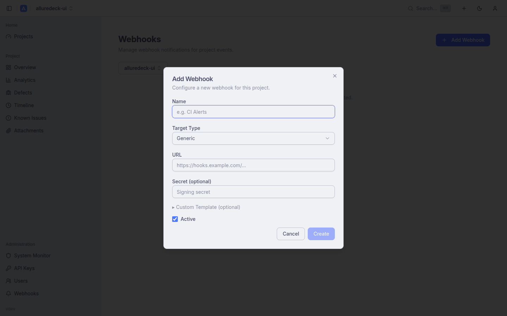
// Users
User Management & Profile
Admins have a dedicated user management panel to create, edit, deactivate, and delete user accounts. Role assignments (admin, editor, viewer) can be changed without touching the identity provider, making it easy to grant temporary elevated access.
Each user can set their own timezone and time format (12h/24h) in their profile preferences. Timestamps throughout the UI — report history, job logs, retention schedules — respect these preferences, eliminating the guesswork of interpreting UTC timestamps.
- Admin CRUD for user accounts
- Role assignment independent of IdP groups
- Deactivate accounts without deletion (SSO 403 on next login)
- Self-service timezone selection per user
- 12h / 24h time format preference
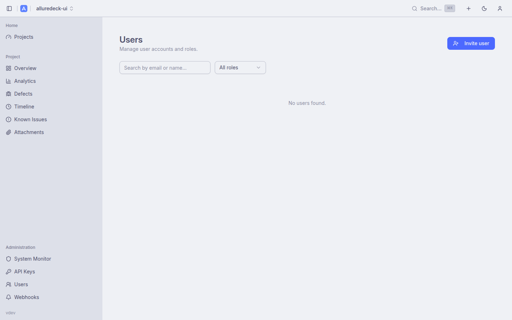
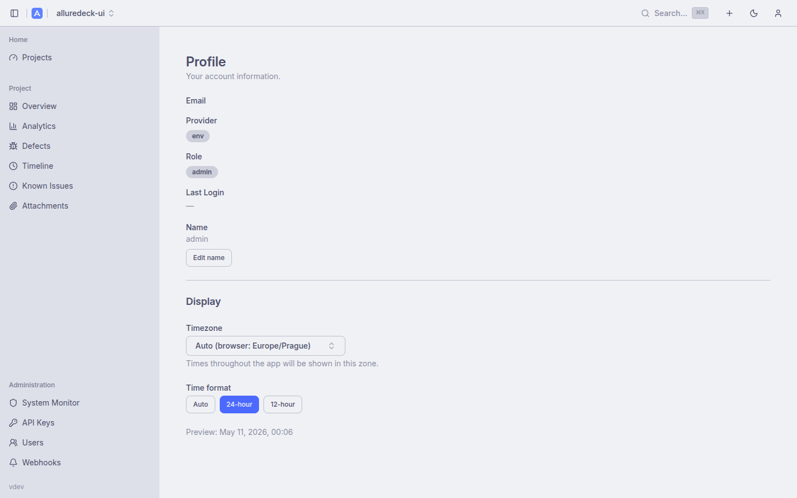
// Pipelines
Pipeline Runs
Parent projects aggregate child project runs by CI pipeline ID, giving you a single row per pipeline execution that links to all the child reports that ran under it. This is especially useful for monorepos or multi-service suites where a single CI pipeline triggers tests across several projects.
The Pipeline Runs view shows pass rate, total test count, and duration rolled up across all children for that pipeline, so you can assess overall suite health without drilling into each child individually.
- Groups child project runs by CI pipeline ID
- Rolled-up pass rate, test count, and duration
- Direct links to each child project's report
- Useful for monorepos and multi-service CI pipelines

// Search
Global Search
Press Cmd+K (or Ctrl+K on Windows/Linux) to open the command palette from anywhere in the app. The palette searches across both project names and test names in a single query, returning grouped results instantly.
Search is backed by PostgreSQL full-text search with GIN indexes, keeping latency low even across large report histories. Results are navigable with arrow keys and activated with Enter, so your hands never leave the keyboard.
- Cmd+K / Ctrl+K command palette shortcut
- Searches projects and test names simultaneously
- PostgreSQL full-text search with GIN indexes
- Grouped results with keyboard navigation
- Arrow key navigation, Enter to open, Escape to close

// Admin
Admin & Storage
The System Monitor in the admin panel shows active and completed background jobs, pending results queues, and storage usage — giving operators full visibility into what the system is doing at any moment.
Storage is flexible: use a local persistent volume for on-prem deployments or an S3-compatible store (AWS S3, MinIO) for cloud. Report retention is configurable per-project using count-based, age-based, or combined strategies, enforced nightly by the background scheduler.
- System Monitor: active/completed jobs, pending results
- Flexible storage: local filesystem or S3/MinIO
- IRSA support for EKS workloads
- Retention: count-based and age-based strategies
- Daily background scheduler for automated cleanup
- User and API key management
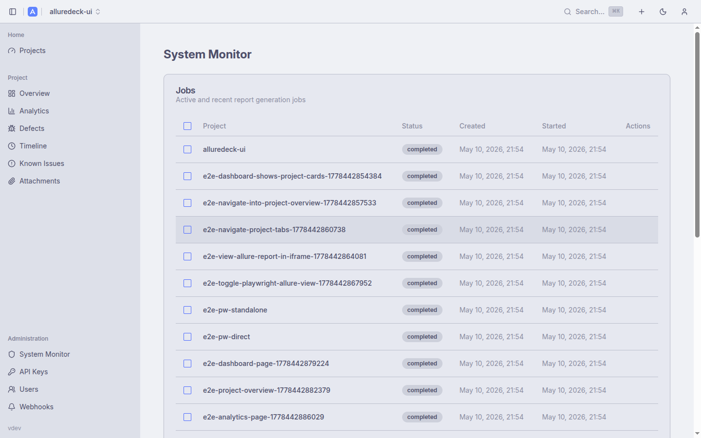
// UX
Navigation & UX
AllureDeck is built for daily use by engineers who live in the terminal and the browser in equal measure. The interface adapts to your working style with persistent preferences, keyboard-first navigation, and a theme that matches your environment.
Dark and light modes use Catppuccin Mocha and Latte respectively, selected automatically from your OS preference or toggled manually. Preferences such as pagination size and group-by selection are persisted across sessions so the dashboard always opens in your preferred state.
- Dark/light mode: Catppuccin Mocha and Latte
- Collapsible sidebar with project tabs
- Project switcher dropdown for fast navigation
- Keyboard shortcuts: Cmd+K search, arrows, Enter, Escape
- Persistent preferences: pagination, group-by, view mode
- Responsive layout — usable on tablets and wide screens
Keyboard-first. Theme-aware.
Built for engineers.